Java Transformer Reference
Java Transformer Reference
Overview
When Mule does not provide an out-of-the-box transformer to meet your application integration needs, the Java transformer enables you to package custom-coded Java logic (i.e., a Java class) that is triggered when the transformer processes the message. In most cases, this Mule building block transforms a message from its original format to a new, modified format.
| The Java Transformer was called a Custom Transformer in previous versions of Mule ESB. |
|---|
To configure a Java transformer, you need to specify the following:
-
The Java class your transformer will call
-
An encoding format the transformer applies to messages
-
A MIME type for your data
The Java transformer applies these configuration settings to each message, then sends the transformed message to the next building block in your flow. Additionally, if you need to execute logic on a particular property within your Java class, the Java transformer allows you to configure Spring beans, which are containers that include developer-defined logic that executes on a specific property within your Java class. The modified Spring data can be saved in persistent storage, then recalled later in the flow. If you choose to add a property to a class, it is possible to inject additional values into the Spring property by configuring the property sub-elements. This allows you to reference arrays, maps, beans, etc. within the defined bean factory (class) or an external bean factory.
In general, MuleSoft recommends that you use a Java transformer if your transformation logic is complex or if message transformation requires the use of multiple out-of-the-box transformers. For example, when you need to create an application that returns all acceptable payment methods a customer can apply when an order is received, you can use a custom Java transformer to host a script that executes the application and returns the information to the client (below).
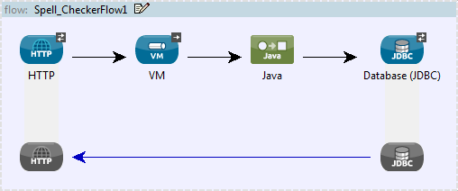
Configuration
You, the developer must manually configure the Java transformer. The mandatory settings are the following:
-
class
-
encoding
-
MIME type
Mule uses the class to instantiate the objects and expose the attributes and methods that can be invoked. Remember, if you need to extend the class assigned to the transformer, you can always configure Spring properties and assign classes (when applicable) to their sub-elements.
To commence configuration of your Java transformer, complete the following steps:
-
drag-and-drop the icon from the Studio palette into the appropriate slot in message processor sequence on the Message Flow canvas
-
double-click the icon to open the Pattern Properties dialog, which will initially display the General tab.
General Tab
This Properties pane tab lets you change the default display name from Java to a name that closely describes the transformation being implemented. It also lets you configure the transformer’s class settings, which expose the collection of properties, attributes and methods referenced by the transformer. (At minimum, you must select a transformer class). Finally, use the General tab to configure Spring bean settings for the transformer.
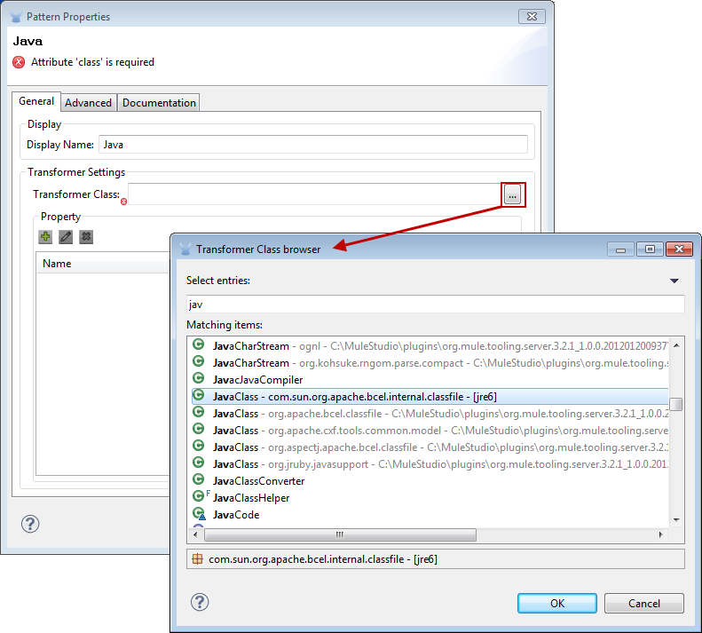
| Field | Description |
|---|---|
Display Name |
This field defaults to the generic transformer name. Change the Display Name, which must be alpha-numeric, to reflect the transformer’s specific role, i.e., |
Transformer Class |
To select a Java class for this transformer instance, click the ellipsis to the right of the Transformer Class text box. After the pop-up appears, type the first few characters of a class name, then scroll to select the class you want. This is a mandatory setting. |
To configure Spring bean settings, click the Add Property button, then enter a name and its associated value or reference. Spring bean configuration data can be saved in a persistent store and restored at a later time.
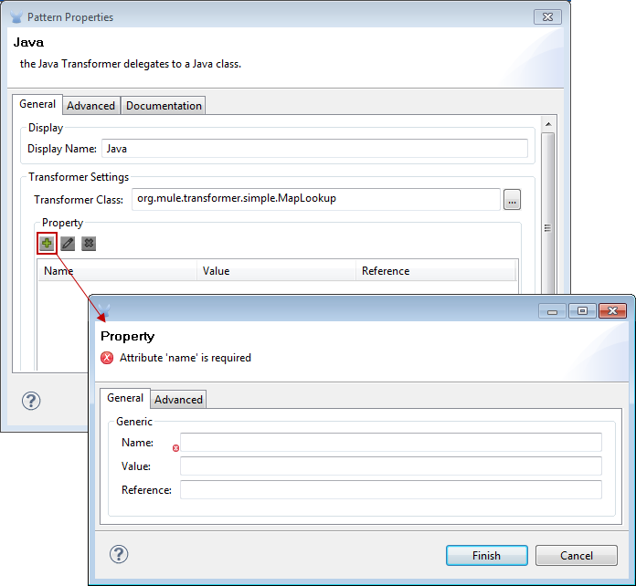
| Field | Description |
|---|---|
Name |
Enter the property name of the Spring element. |
Value |
Enter a string to specify a Spring element. |
Reference |
Enter a string that specifies the Spring property you want to reference (i.e., |
Spring bean sub-elements are used to define a bean value inline, instead of referring to a bean defined elsewhere in the class. To configure Spring sub-elements, complete the following steps:
-
click the Add Property button
-
select the Advanced tab
-
click the Add Sub-elements button
-
choose a property element to configure
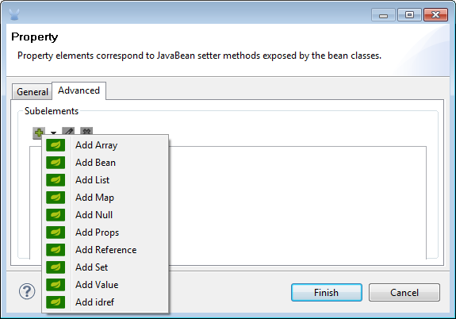
Advanced Tab
This tab lets you enter Return Class information and specify the Encoding and MIME Type for the message payload as it progresses through the Java transformer. Use the drop-down menus to select the encoding format and the MIME type to be applied to all messages received by the transformer.
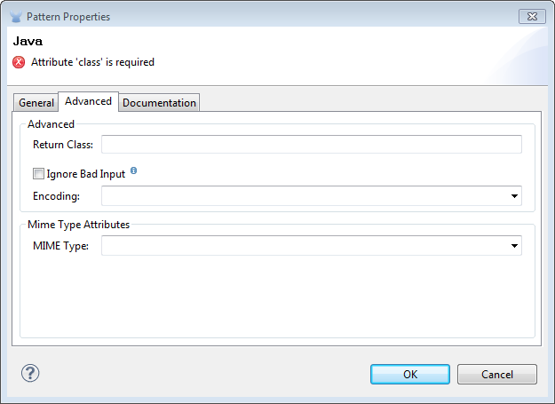
| Field | Description |
|---|---|
Return Class |
The class of the message generated by the transformer. This is used whenever transformers are auto-selected to verify that the transformer returns the correct class type. |
Ignore Bad Input |
If this Java transformer is part of a chain, and |
Encoding |
Select the character encoding format for messages as they flow out of the Java transformer. As an example |
MIME Type |
Select the file format for messages emerging from the Java transformer (i.e., |
Documentation Tab
The Documentation tab and Description field let you enter development details about your Java transformer. Each transformer has a Documentation tab.
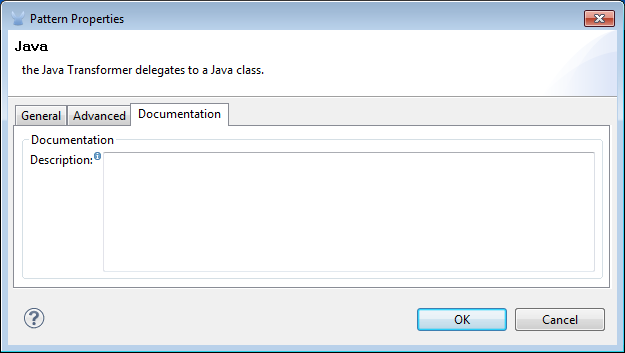
| Field | Description |
|---|---|
Documentation |
Enter all relevant information regarding this Java Transformer. It is displayed in Studio when you hover over the transformer icon on the Message Flow canvas. |
Configuring an HTTP Endpoint for the Java Transformer
In an HTTP client/server model, a client requests information from an external or internal server. Unless an error occurs, the server returns the requested data to user’s browser. The data sent back to the client, called the message payload, contains a header, certain data used to serve up the Web page to the client, and the message payload. For example, suppose you need a transformation process that converts HTTP data into a map so that the Java class can:
-
parse the data
-
look up a specific attribute
-
return the attribute’s value to the client
To implement this scenario in a flow, use the following building blocks:
-
HTTP endpoint
-
Body-to-Parameter Map transformer
-
Java transformer
The transport used to connect to the web resources is the HTTP endpoint, which contains specific parameters you enter during configuration. The Body-to-Parameter-Map transformer converts the HTTP request data into a parameter map a Java transformer can interpret.
Finally, the Java transformer modifies the message by invoking the MapLookup class and all defined attributes then retrieving specific parameters out of the map. Once this transformation process completes, the flow returns the data to the client.
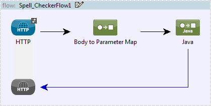
HTTP Configuration
You must configure your HTTP endpoint to access external web resources. You can configure these parameters directly on the HTTP endpoint instance, or you may create Global Endpoint and Global Connector references.
| You may reuse these Global endpoint and connector references across multiple building block instances within your project. If you decide not use Global references, you must configure HTTP (i.e., Host, Port, and Path, etc.) for the requested resource directly on your HTTP endpoint instance. |
|---|
Configuring HTTP on the HTTP Endpoint
Complete the following steps:
-
double-click the icon representing your HTTP endpoint on the Message Flow canvas. This opens the Pattern Properties pane.
-
Within the Basic Settings tab on the General tab, specify the Host server through which your application will make the HTTP connection. For inbound endpoints, this is typically
localhost. -
Specify the HTTP Port on the host server, which is typically
8081. -
Specify the Path to the resource to which you will connect.
Configuring HTTP through Global Elements
If you decide not to configure HTTP directly on your HTTP endpoint and instead reference Global Elements (i.e., a global endpoint or a global connector), you have two options for creating them:
-
Click the HTTP endpoint References tab on the Properties pane of your HTTP endpoint instance, then click the add button to the right of the *Connector reference * text box.
-
Click the Global Elements tab below the Message Flow canvas, click the Create button, click the next to Connectors, select HTTP/HTTPS, then click OK to complete the operation.
Global Connector Reference
Whether you create the global connector through the References tab on the Properties pane for your HTTP endpoint instance or through the Global Elements tab, configuration for the global connector remains the same:
General Tab
Use this tab to enter connector name information and configure cookie support.
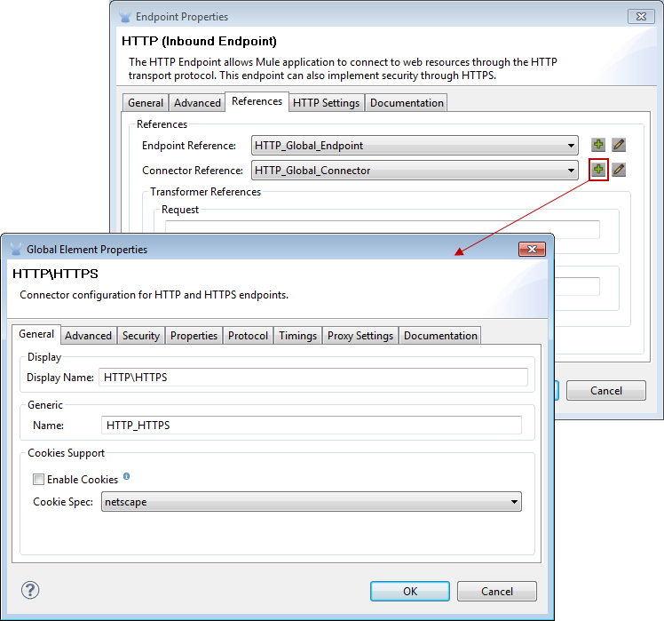
| Panel | Description |
|---|---|
Display |
Enter a display name that describes the connector’s role in your flow, such as "HTTP_Global_Connector". This name appears in the |
Generic |
Enter the name that identifies this connector. This name appears on the Configuration XML screen in the |
Cookie Support |
Check this box to enable cookies to be sent along with the message. You must also configure the cookie type i.e., |
Configuration XML View
The code shown below is created on-the-fly as building-blocks are added to the Message Canvas. The XML file will update each time configuration data is added or modified.
Click here for XML Schema Information
http://www.mulesoft.org/schema/mule/httphttp://www.mulesoft.org/schema/mule/http/current/mule-http.xsdClick here for XML code
<?xml version="1.0" encoding="UTF-8"?><mule xmlns="http://www.mulesoft.org/schema/mule/core" xmlns:http="http://www.mulesoft.org/schema/mule/http" xmlns:doc="http://www.mulesoft.org/schema/mule/documentation" xmlns:spring="http://www.springframework.org/schema/beans" xmlns:core="http://www.mulesoft.org/schema/mule/core" xmlns:jdbc="http://www.mulesoft.org/schema/mule/jdbc" xmlns:vm="http://www.mulesoft.org/schema/mule/vm" xmlns:xsi="http://www.w3.org/2001/XMLSchema-instance" version="CE-3.2.1" xsi:schemaLocation="http://www.mulesoft.org/schema/mule/http http://www.mulesoft.org/schema/mule/http/current/mule-http.xsd http://www.springframework.org/schema/beans http://www.springframework.org/schema/beans/spring-beans-3.0.xsd http://www.mulesoft.org/schema/mule/core http://www.mulesoft.org/schema/mule/core/current/mule.xsd http://www.mulesoft.org/schema/mule/jdbc http://www.mulesoft.org/schema/mule/jdbc/current/mule-jdbc.xsd http://www.mulesoft.org/schema/mule/vm http://www.mulesoft.org/schema/mule/vm/current/mule-vm.xsd "> <http:connector name="HTTP_Global_Connector" enableCookies="true" cookieSpec="netscape" validateConnections="true" sendBufferSize="0" receiveBufferSize="0" receiveBacklog="0" clientSoTimeout="10000" serverSoTimeout="10000" socketSoLinger="0" proxyHostname="localhost" proxyPort="80" doc:name="HTTP Connector"/> <http:endpoint exchange-pattern="request-response" host="localhost" port="8081" name="HTTP_Global_Endpoint" doc:name="HTTP Global Endpoint"/> <flow name="Spell_CheckerFlow1" doc:name="Spell_CheckerFlow1"> <http:inbound-endpoint exchange-pattern="request-response" encoding="UTF-8" mimeType="text/html" ref="HTTP_Global_Endpoint" connector-ref="HTTP_Global_Connector" contentType="text/html" doc:name="HTTP"/> <http:body-to-parameter-map-transformer encoding="UTF-8" mimeType="text/html" doc:name="Body to Parameter Map"/> <custom-transformer encoding="UTF-8" mimeType="text/html" class="org.mule.transformer.simple.MapLookup" doc:name="Java"/> <spring:property name="homeLocation" value="SanFrancisco"/> </custom-transformer> </flow></mule> ...Local Endpoint Connection
If you do not use Global Connector References to serve client requests, then you must connect the HTTP endpoint by configuring the host, port, and path (optional) settings or by entering an address. Complete the username and password parameters if authentication is required. The host and port parameters are mutually exclusive to the address and reference parameters; therefore, you must choose which connection option to use.
If you need to share the same connection in other environments, it would be more efficient to configure Global Connection References over local endpoint connections. Using Global Connection References prevents having to create and configure multiple connections for clients requesting access to a resource.
Click here for XML Code
<?xml version="1.0" encoding="UTF-8"?><mule xmlns="http://www.mulesoft.org/schema/mule/core" xmlns:http="http://www.mulesoft.org/schema/mule/http" xmlns:doc="http://www.mulesoft.org/schema/mule/documentation" xmlns:spring="http://www.springframework.org/schema/beans" xmlns:core="http://www.mulesoft.org/schema/mule/core" xmlns:jdbc="http://www.mulesoft.org/schema/mule/jdbc" xmlns:vm="http://www.mulesoft.org/schema/mule/vm" xmlns:xsi="http://www.w3.org/2001/XMLSchema-instance" version="CE-3.2.1" xsi:schemaLocation="http://www.mulesoft.org/schema/mule/http http://www.mulesoft.org/schema/mule/http/current/mule-http.xsd http://www.springframework.org/schema/beans http://www.springframework.org/schema/beans/spring-beans-3.0.xsd http://www.mulesoft.org/schema/mule/core http://www.mulesoft.org/schema/mule/core/current/mule.xsd http://www.mulesoft.org/schema/mule/jdbc http://www.mulesoft.org/schema/mule/jdbc/current/mule-jdbc.xsd http://www.mulesoft.org/schema/mule/vm http://www.mulesoft.org/schema/mule/vm/current/mule-vm.xsd "><flow name="Spell_CheckerFlow1" doc:name="Spell_CheckerFlow1"> <http:inbound-endpoint exchange-pattern="request-response" host="www.host.com" port="8080" path="example/path" user="User" password="secret" doc:name="HTTP"/> <http:body-to-parameter-map-transformer encoding="UTF-8" mimeType="text/html" doc:name="Body to Parameter Map"/> <custom-transformer encoding="UTF-8" mimeType="text/html" class="org.mule.transformer.simple.MapLookup" doc:name="Java"/> <spring:property name="homeLocation" value="SanFrancisco"/> </custom-transformer> </flow></mule> ...Advanced Tab
This tab allows you to configure Spring Pool Factory settings and activate notification and connection settings.
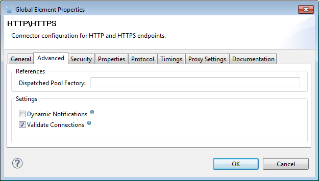
| Panel | Description |
|---|---|
References |
Enter the Dispatcher Pool Factory to be referenced by Spring Beans. |
Settings |
Check the box to register the HTTP listeners to register dynamically at runtime using the MuleContext instance. The validate connections box is checked by default, so Mule will try to validate all HTTP connections. |
Security Tab
If you want to send message using a secure-socket layer, check the Enable HTTPS box. All messages will then be sent via HTTPS.
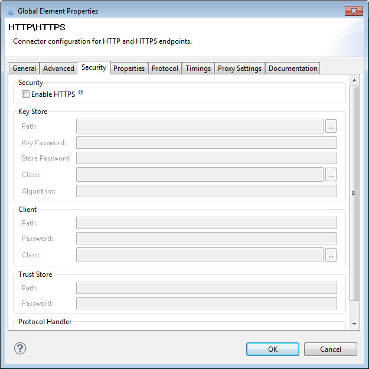
| Panel | Description |
|---|---|
Security |
Use this tab to activate HTTPS and enter the configuration information to connect the Key Store, Client, Trust Store, and Protocol Handler. |
Properties Tab
This tab is used to enter Spring bean property information. In addition, Spring properties can also include Spring sub-elements. Configuring Spring sub-element information lets you extend your current class to define the values of specific parameters.
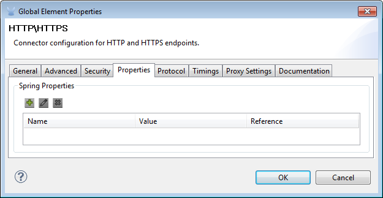
| Panel | Description |
|---|---|
Spring Properties |
click the add button to enter the name, value and reference of the Spring property you want to define. After the property window appears, click the Advanced tab to configure Spring sub-element properties. |
Protocol Tab
This tab enables you to configure client and server buffer parameters for messages. This tab also included the parameters to configure the TCP socket settings.
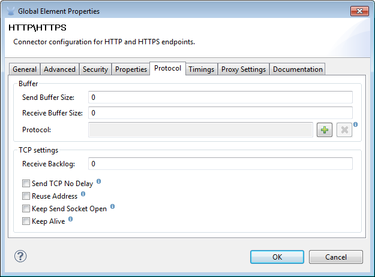
| Panel | Description |
|---|---|
Buffer |
Select the buffer size for all messages. Values are set to 0 by default. This panel lets you specify the type of TCP protocol used to process messages. |
Timings Tab
This tab lets you specify socket timing values for all messages. You can set the timing values for the client socket, the server socket, and the socket linger.
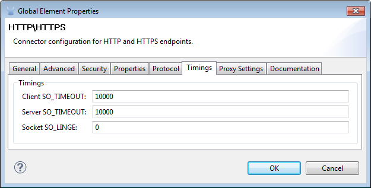
| Panel | Description |
|---|---|
Timings |
Enter the socket timeout value to be used by clients and servers. The values are set to 10000 by default. The socket linger value determines how long the socket will stay open to ensure all data has been transmitted. The default value is 0. |
HTTP Transformers
Studio includes a set of native transformers that can be used to transform HTTP data before it is returned to the client (see:*below*).
| Transformer | Description |
|---|---|
HTTP Response to Object |
A transformer that converts an HTTP response to a Mule Message. The payload may be a String, stream, or byte array. |
HTTP Response to String |
Converts an HTTP response payload into a string. The headers of the response will be preserved on the message. |
Message to HTTP Response |
This transformer will create a valid HTTP response using the current message and any HTTP headers set on the current message. |
Object to HTTP Request |
This transformer will create a valid HTTP request using the current message and any HTTP headers set on the current message. |
Body to Parameter Map |
Parses the body of an HTTP request into a map. |
Body to Parameter Map Transformer
Our example incorporates this transformer into the flow because the message sent from the HTTP endpoint needs to be transformed into a map. This transformation permits the Java transformer to reference the map and retrieve a value.
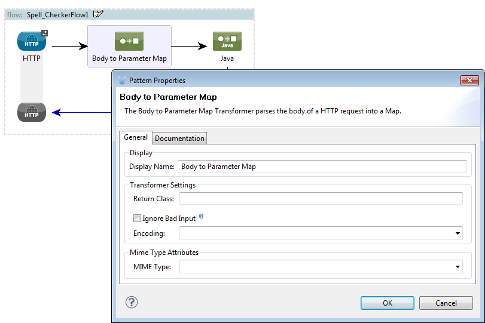
| Panel | Description |
|---|---|
Display |
Defaults to the generic transformer name. Change the display name, which must be alpha-numeric, to reflect the transformer’s specific role, e.g., Body to Parameter Map for Sales Web Page |
Transformer Settings |
Select a Return Class and a Encoding format for messages. The parameter Ignore Bad Input, instructs the transformer how to handle bad messages. Remember, if this transformer is part of a chain, enabling this parameter will let the message proceed to next building-block if the message cannot be read. |
Mime Type Attributes |
Select the transformer’s output format from the dropdown list. |
Click here for XML Code
<?xml version="1.0" encoding="UTF-8"?><mule xmlns="http://www.mulesoft.org/schema/mule/core" xmlns:http="http://www.mulesoft.org/schema/mule/http" xmlns:doc="http://www.mulesoft.org/schema/mule/documentation" xmlns:spring="http://www.springframework.org/schema/beans" xmlns:core="http://www.mulesoft.org/schema/mule/core" xmlns:jdbc="http://www.mulesoft.org/schema/mule/jdbc" xmlns:vm="http://www.mulesoft.org/schema/mule/vm" xmlns:xsi="http://www.w3.org/2001/XMLSchema-instance" version="CE-3.2.1" xsi:schemaLocation="http://www.mulesoft.org/schema/mule/http http://www.mulesoft.org/schema/mule/http/current/mule-http.xsd http://www.springframework.org/schema/beans http://www.springframework.org/schema/beans/spring-beans-3.0.xsd http://www.mulesoft.org/schema/mule/core http://www.mulesoft.org/schema/mule/core/current/mule.xsd http://www.mulesoft.org/schema/mule/jdbc http://www.mulesoft.org/schema/mule/jdbc/current/mule-jdbc.xsd http://www.mulesoft.org/schema/mule/vm http://www.mulesoft.org/schema/mule/vm/current/mule-vm.xsd "> <http:body-to-parameter-map-transformer encoding="UTF-8" mimeType="text/html" doc:name="Body to Parameter Map"/> </flow></mule>...Java Transformer Configuration
In our example flow, after the body to parameter map transformation occurs, a Java transformer is used to reference the data from the map. Remember, our example also wants to use the MapLookup class to reference a parameter and retrieve its value before returning the transformed message to the client. Before you configure the Java transformer, first, you need either create a new Java class that references the MapLookup class or create a Global Java transformer that can be used to extend the MapLookup class to other Mule environments. To select the Java transformer class double-click the icon to open the Pattern Properties pane. Click the ellipsis button, and type the first few characters of a class name to narrow your search. After selecting a class, you can switch to the Configuration XML editor to enter any additional code that needs to execute.
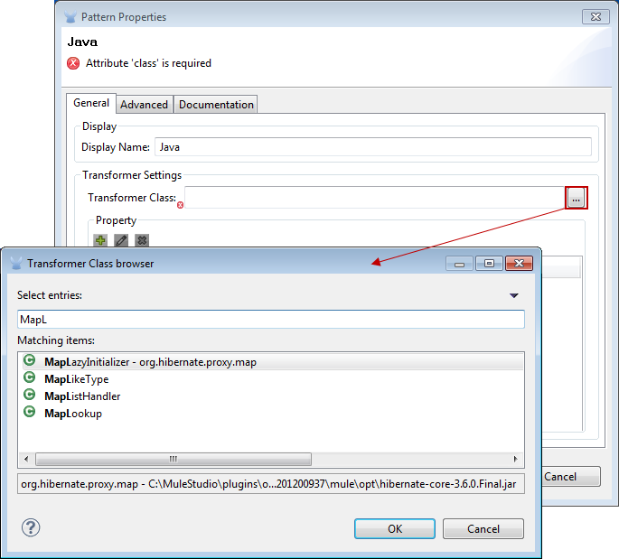
Click here for XML Code
<?xml version="1.0" encoding="UTF-8"?><mule xmlns="http://www.mulesoft.org/schema/mule/core" xmlns:http="http://www.mulesoft.org/schema/mule/http" xmlns:doc="http://www.mulesoft.org/schema/mule/documentation" xmlns:spring="http://www.springframework.org/schema/beans" xmlns:core="http://www.mulesoft.org/schema/mule/core" xmlns:jdbc="http://www.mulesoft.org/schema/mule/jdbc" xmlns:vm="http://www.mulesoft.org/schema/mule/vm" xmlns:xsi="http://www.w3.org/2001/XMLSchema-instance" version="CE-3.2.1" xsi:schemaLocation="http://www.mulesoft.org/schema/mule/http http://www.mulesoft.org/schema/mule/http/current/mule-http.xsd http://www.springframework.org/schema/beans http://www.springframework.org/schema/beans/spring-beans-3.0.xsd http://www.mulesoft.org/schema/mule/core http://www.mulesoft.org/schema/mule/core/current/mule.xsd http://www.mulesoft.org/schema/mule/jdbc http://www.mulesoft.org/schema/mule/jdbc/current/mule-jdbc.xsd http://www.mulesoft.org/schema/mule/vm http://www.mulesoft.org/schema/mule/vm/current/mule-vm.xsd "> <custom-transformer encoding="UTF-8" mimeType="text/html" class="org.mule.transformer.simple.MapLookup" doc:name="Java"/> </custom-transformer> </flow></mule>...Spring Configuration
Configure Spring properties to assign a value or reference to a specific property, attribute, or element. If you need to assign a value or reference to a defined property, you can extend the class by configuring the specific property subelement. In our example, after the HTTP request was converted to a map, a value is assigned to a Spring property before the response message is returned to the client.
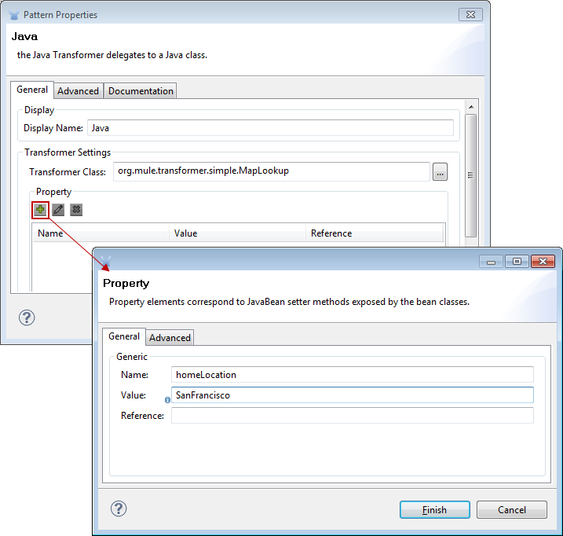
Click here for XML Code
<?xml version="1.0" encoding="UTF-8"?><mule xmlns="http://www.mulesoft.org/schema/mule/core" xmlns:http="http://www.mulesoft.org/schema/mule/http" xmlns:doc="http://www.mulesoft.org/schema/mule/documentation" xmlns:spring="http://www.springframework.org/schema/beans" xmlns:core="http://www.mulesoft.org/schema/mule/core" xmlns:jdbc="http://www.mulesoft.org/schema/mule/jdbc" xmlns:vm="http://www.mulesoft.org/schema/mule/vm" xmlns:xsi="http://www.w3.org/2001/XMLSchema-instance" version="CE-3.2.1" xsi:schemaLocation="http://www.mulesoft.org/schema/mule/http http://www.mulesoft.org/schema/mule/http/current/mule-http.xsd http://www.springframework.org/schema/beans http://www.springframework.org/schema/beans/spring-beans-3.0.xsd http://www.mulesoft.org/schema/mule/core http://www.mulesoft.org/schema/mule/core/current/mule.xsd http://www.mulesoft.org/schema/mule/jdbc http://www.mulesoft.org/schema/mule/jdbc/current/mule-jdbc.xsd http://www.mulesoft.org/schema/mule/vm http://www.mulesoft.org/schema/mule/vm/current/mule-vm.xsd "> <custom-transformer encoding="UTF-8" mimeType="text/html" class="org.mule.transformer.simple.MapLookup" doc:name="Java"/> <spring:property name="homeLocation" value="SanFrancisco"/> </custom-transformer> </flow></mule>...Endpoint Reference
For additional information regarding HTTP configuration, see the Studio Page [HTTP Endpoint Reference]
For more information, see the Mule ESB page Creating Custom Transformers